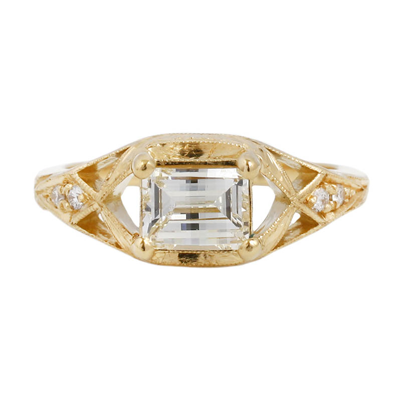
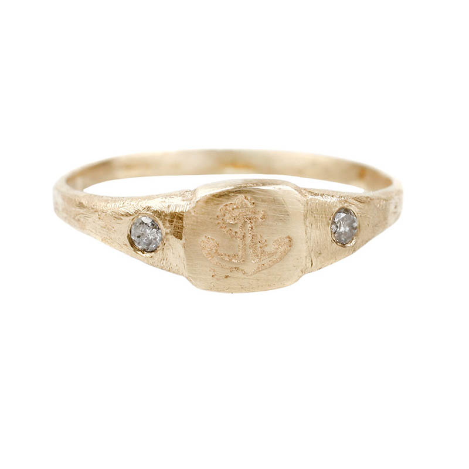
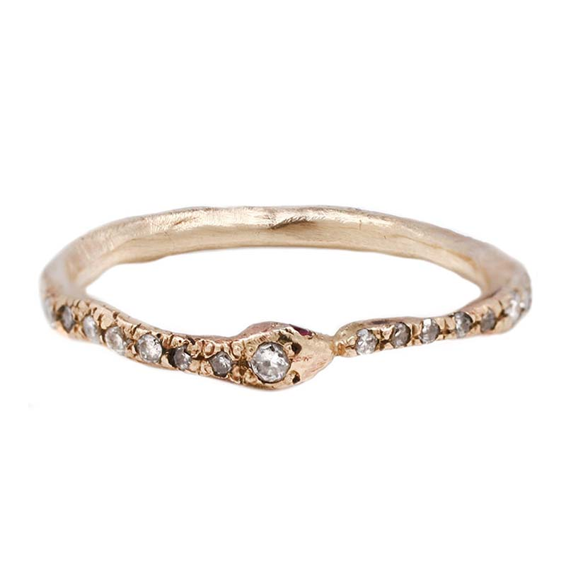
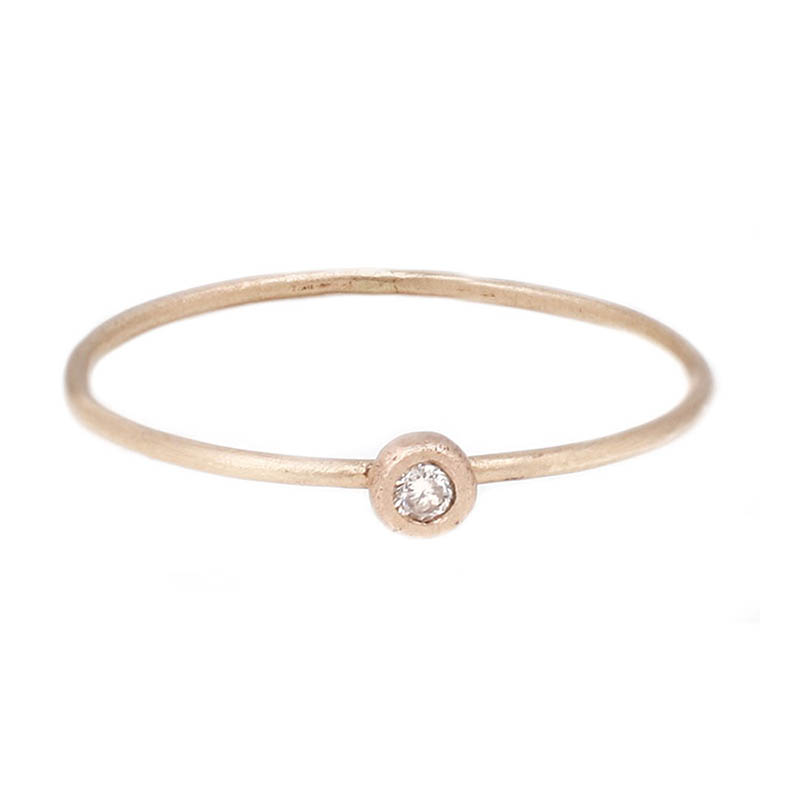
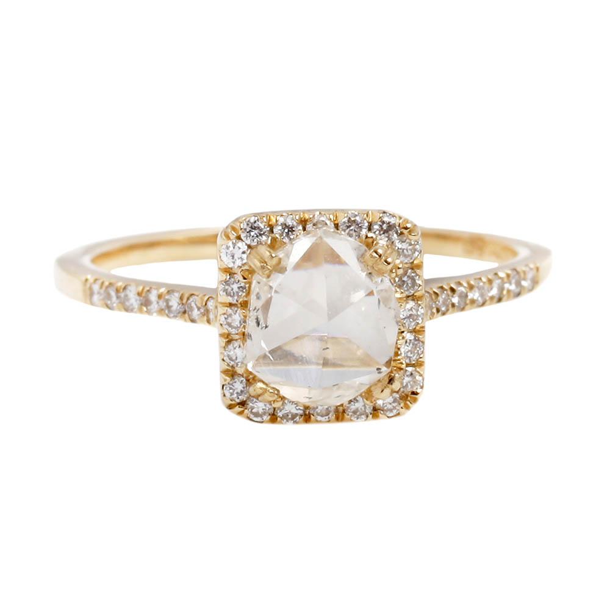

A tiny little hand hewn 14k yellow gold crescent moon with four tiny pavé diamonds make this one of our favorite little sublunaries ever. We love how it looks paired with Daisy’s Diamond Pebble, its long lost star.

Iszy
A power ring with a twist, her square stone set East/West, fanning out all in curves from there and studded with diamonds. The surprise ending is her centerpiece, a beautiful 0.95ct antique “bent top” diamond, brilliance like a cable car passing in the night, the kind of diamond that wears its unicity on its sleeve.

Lana
A hand-engraved anchor, or a palm tree, or maybe a lightning bolt, sits atop a 14k yellow gold pinky ring flanked by two sparkly diamonds, mooring your tiniest finger throughout all your little island’s storms.

Marisela
The tiniest little hand hewn 14k gold snake covered in diamonds, each selected by hand to give this ring its vintage feel. Daisy adds the littlest of rubies to the eyes, giving life to Queen Victoria’s favorite symbol.

Alex
Only the cutest and clearest little white diamond set in solid 14k or silver on top of the thinnest most precious little band. Wear it as a solitaire or stack it up against so many more for a bigger bang.

Lola
Gentle oddball love, those three words so apt for the Chiku, with a 0.74ct antique rose cut diamond surrounded by the tiniest little pavé. Cut in the late 1800s and super clear, the diamond’s a touch wonky, just like humans and their relationships, a perfect metaphor for that thing we do.
About Daisy
Raised in Hawaii and California and now living in San Francisco, Daisy’s work is a meditation on the symbols of our inherited human heritage. Combining classic metal techniques with the icons of our shared histories, she balances old world with new, ranging from expressions of life through the most modest of teensy diamond rings to powerful representations of death, rebirth, and protection.